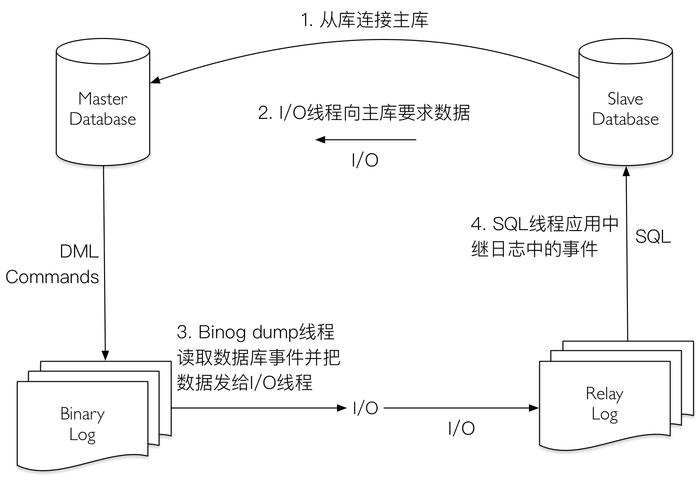
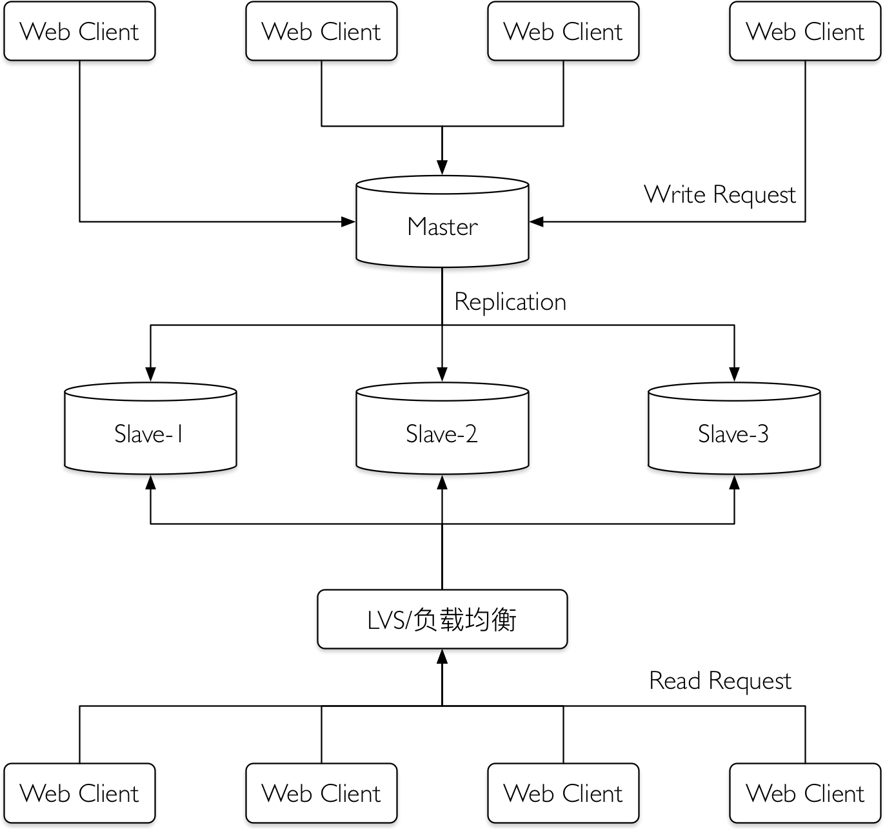
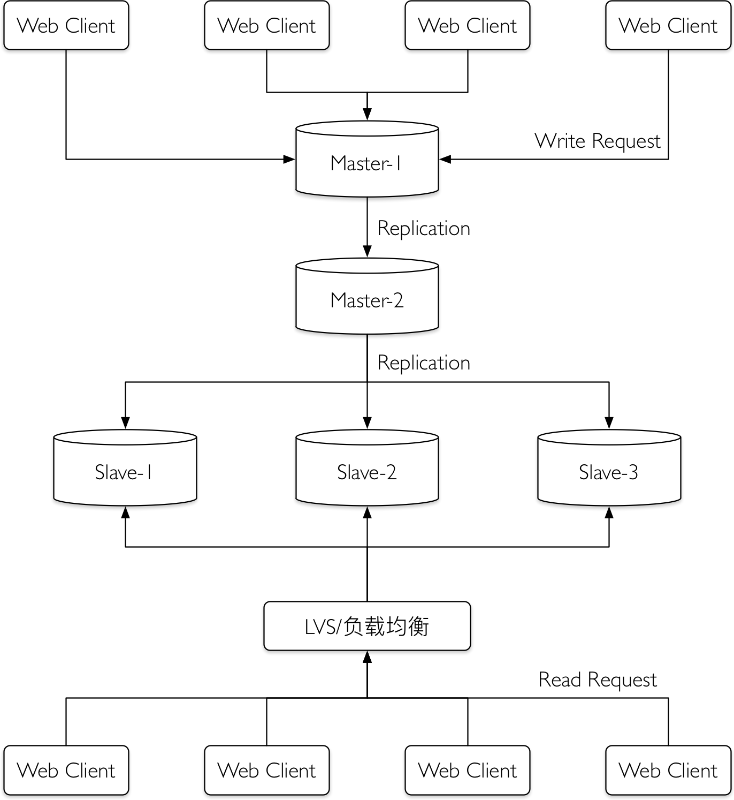
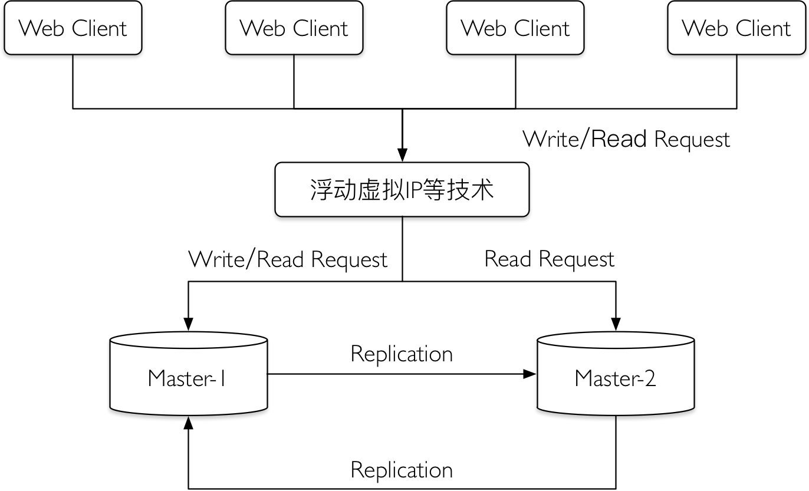
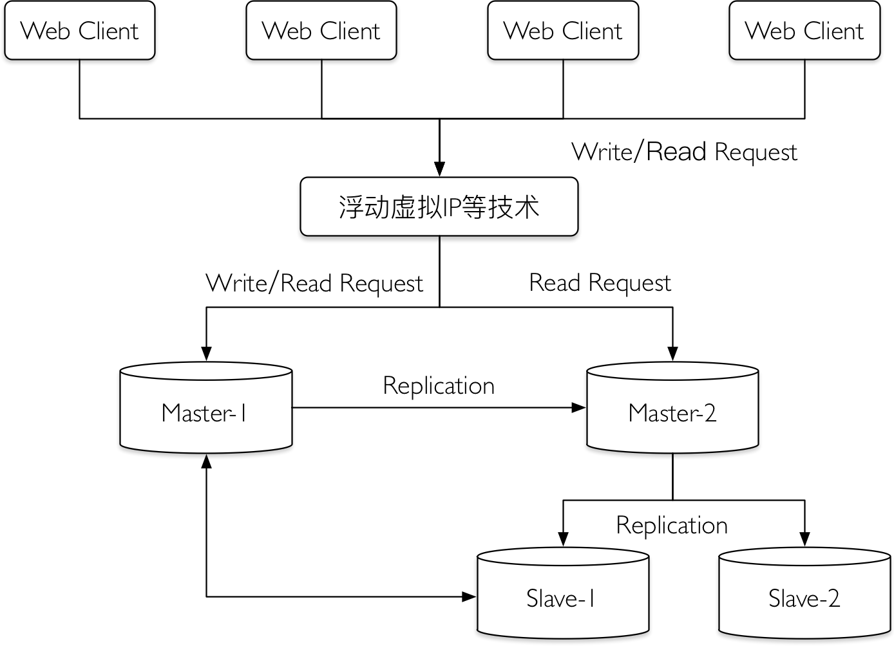

Mysql从3.23版本开始提供复制的功能。复制是指将主数据库的DDL和DML操作通过二进制日志传到复制服务器（也叫从库）上，然后在从库上对这些日志重新执行（也叫重做），从而使得从库和主库的数据保持同步。
Mysql支持一台主库同时向多台从库进行复制，从库同时也可以作为其他服务器的主库，实现链状的复制。
Mysql复制的优点包括以下3个方面：
- 如果主库出现问题，可以快速切换到从库提供服务。
- 可以在从库上执行查询操作，降低主库的访问压力。
- 可以在从库上执行备份，以免备份期间影响主库的服务。
目录
复制概述
Mysql的复制原理大致如下。
首先，Mysql主库在事物提交时会把数据变更作为时间Events记录在二进制日志文件Binlog中；Mysql主库上的sync_binlog参数控制Binlog日志刷新到磁盘。
主库推送二进制日志文件Binlog中的事件到从库的中继日志Relay Log，之后从库根据中继日志Relay Log重做数据变更操作，通过逻辑复制以此来达到主库和从库的数据一致。
Mysql通过3个线程来完成主从库的数据复制：其中Binlog Dump线程跑在主库上，I/O线程和SQL线程跑在从库上。当在从库上启动复制（START SLAVE）时，首先创建I/O线程连接主库，主库随后创建Binlog Dump线程读取数据库事件并发送给I/O线程，I/O线程获取到事件数据后更新到从库的中继日志Relay Log中去，之后从库上的SQL线程读取中继日志Relay Log中更新的数据库事件并应用，如下图。

可以通过show processlist命令在主库上查看Binlog Dump线程，从Binlog Dump线程的状态可以看到，Mysql的复制品是主库主动推送日志到从库去的，是属于“推”日志的方式来做同步。
1 | mysql> show processlist; |
同样的，在从库上通过show processlist可以看到I/O线程和SQL线程，I/O线程等待主库上的Binlog Dump线程发送事件并更新到中继日志Relay Log，SQL线程读取中继日志Relay Log并应用变更到数据库。
1 |
复制中的各类文件
从Mysql复制流程可以看到复制过程中涉及到了两类非常重要的日志文件：二进制日志文件（Binlog）和中继日志文件（Relay Log）。
二进制日志文件
二进制日志文件（Binlog）会把Mysql中的所有数据修改操作以二进制的形式记录到日志文件中，包括create、drop、update、delete等操作，但二进制日志文件（Binlog）不会记录select操作，因为select操作并不修改数据。
可以通过show variables查看Binlog的格式，Binlog支持Statement、Row、Mixed三种格式，也对应了Mysql的三种复制技术
1 | mysql> show variables like '%binlog_format'; |
中继日志文件
中继日志文件（Relay Log）的文件格式、内容和二进制日志文件（Binlog）一样，唯一的区别在于从库上的SQL线程在执行完当前中继日志文件（Relay Log）中的事件之后，SQL线程会自动删除当前中继日志文件（Relay Log），避免从库上的中继日志文件（Relay Log）占用过多的磁盘空间。
其他日志文件
为了保证从库cash重启之后，从库的I/O线程和SQL线程仍然能够知道从哪里开始复制，从库上默认还会创建两个日志文件master.info和relay-log.info用来保存复制的进度。这两个文件在磁盘上以文件形式分别记录了从库的I/O线程当前读取主库二进制日志文件（Binlog）的进度和SQL线程应用中继日志文件（Relay Log）的进度。
其中master.info记录的是I/O线程连接主库的一些参数，主要包括：
- Master Host：主库的IP。
- Master User：主库上，主从复制使用的用户账号。
- Master Port：主库Mysql的端口号。
- Master_Log_File：从库的I/O线程当前正在读取的主库Binlog的文件名。
- Read_Master_Log_Pos：从库I/O线程当前读取到的位置。
而relay-log.info记录的是SQL线程应用中继日志Relay Log的一些参数，主要包括：
- Read_Log_File：从库SQL线程正在读取和应用的中继日志Relay Log的文件名。
- Read_Log_Pos：从库SQL线程当前读取并应用的中继日志Relay Log的位置。
- Relay_Master_Log_File：从库SQL线程正在读取和应用的Relay Log对应于主库Binlog的文件名。
- Exec_Master_Log_Pos：中继日志Relay Log中Relay_Log_Pos位置对应于主库Binlog的位置。
复制方式
二进制日志文件Binlog的格式有以下三种。
Statement：基于SQL语句级别的Binlog，每条修改数据的SQL都会保存到Binlog中。
Row：基于行级别，记录每一行数据的变化，也就是将每一行数据的变化记录到Binlog里面，记录的非常仔细，但是并不记录原始SQL；在复制的时候，并不会因为存储过程或触发器造成主从数据不一致的问题，但是记录的日志两较Statement格式要大的多。
Mixed：混合Statement和Row模式，默认情况下采用Statement模式记录，某些情况下会切换到Row模式，例如SQL中包含与时间、用户相关的函数等。
同时也对应了Mysql复制的3种技术。
- binlog_format=Statement：基于SQL语句的复制，也叫Statement-Based Replication（SBR），Mysql 5.1.4或之前版本仅提供基于SQL语句的复制。
- binlog_format=Row：基于行的复制，也叫Row-Based-Replication（RBR）。
- binlog_format=Mixed：混合复制模式，混合了基于SQL语句的复制和基于行的复制。
在binlog_format设置为Row格式时，Mysql实际上在Binlog中逐行记录数据的变更，Row格式比Statement格式更能保证从库数据的一致性（复制的是记录，而不是单纯操作SQL）。当然，Row格式下的Binlog的日志量可能会增大非常多，在设置时需要考虑到磁盘空间问题。
参数binlog_format可以在全局设置或者当前Session动态设置：在全局设置会影响所有的Session，而在当前Session设置则仅仅影响当前Session。可以通过Set命令来实时修改Binlog的格式。
1 | mysql> set global binlog_format = 'ROW'; |
复制架构
复制的3种常见架构有一主多从复制架构、多级复制架构和双主复制/Dual Master架构。
一主多从复制架构
在主库读取请求压力非常大的场景下，可以通过配置一主多从复制架构实现读写分离，把大量对实时性要求不是特别高的读请求通过负载均衡分布到多个从库上，降低主库的读取压力。

在主库出现异常宕机的情况下，可以把一个从库切换为主库继续提供服务。
多级复制架构
一主多从的架构能够解决大部分读取请求压力特别大的场景的需求，考虑到Mysql的复制是主库“推送”Binlog日志到从库，主库的I/O压力和网络压力会随着从库的增加而增长（每个从库都会在主库上有一个独立的Binlog Dump线程来发送事件），而多级复制架构解决一主多从场景下，主库额外的I/O和网络压力。

对比一主多从的架构，多级复制仅仅是在主库Master-1复制到从库Slave-1、Slave-2、Slave-3的中间增加一个二级主库Master-2，这样Master-1只需要给一个从库Master-2“推送”Binlog日志即可，减轻主库Master-1推送的压力。二级主库Master-2再“推送”Binlog日志给从库Slave-1、Slave-2、Slave-3。
多级复制解决了一主多从场景下，主库的I/O负载和网络压力，当然也要缺点： Mysql的复制是异步复制，多级复制场景下主库的数据经过两次复制才到达从库，期间的延时比一主多从复制场景下的要大。
双主复制/Dual Master架构
双主/Dual Master架构特别适用DBA做维护等需要主从切换的场景，通过双主/Dual Master架构避免了重复搭建从库的麻烦。

主库Master-1和Master-2互为主从，所有Web Client 客户端的写请求都访问主库Master-1，而读请求可以选择访问主库Master-1或者Master-2。假如，DBA需要做日常维护操作，为了避免影响服务：
- 首先，在Master-1库上停止Slave线程（Stop Slave），避免后续对Master-2库的维护操作被实时复制到Master-1库上，对服务造成影响。
- 其次，在Master-2库上停止Slave线程（Stop Slave），开始日常维护操作，例如创建索引等。
- 然后，在Master-2库上完成维护操作后，打开Master-2库上的Slave线程（Start Slave）。
- 最后，确认Master-1库上无应用访问后，打开Master-1的Slave线程（Start Slave）。
通过双主复制/Dual Master架构能大大减轻一主多从架构下主库进行维护带来的额外搭建从库的工作。
当然，双主复制还能和主从复制联合起来使用：在Master-2库下配置从库Slave-1、Slave-2等，这样既可通过从库Slave-1等来分担读取压力，同时在DBA做维护的同时，避免了重建从库的额外工作。Mysql的双主多级复制架构如下图：
